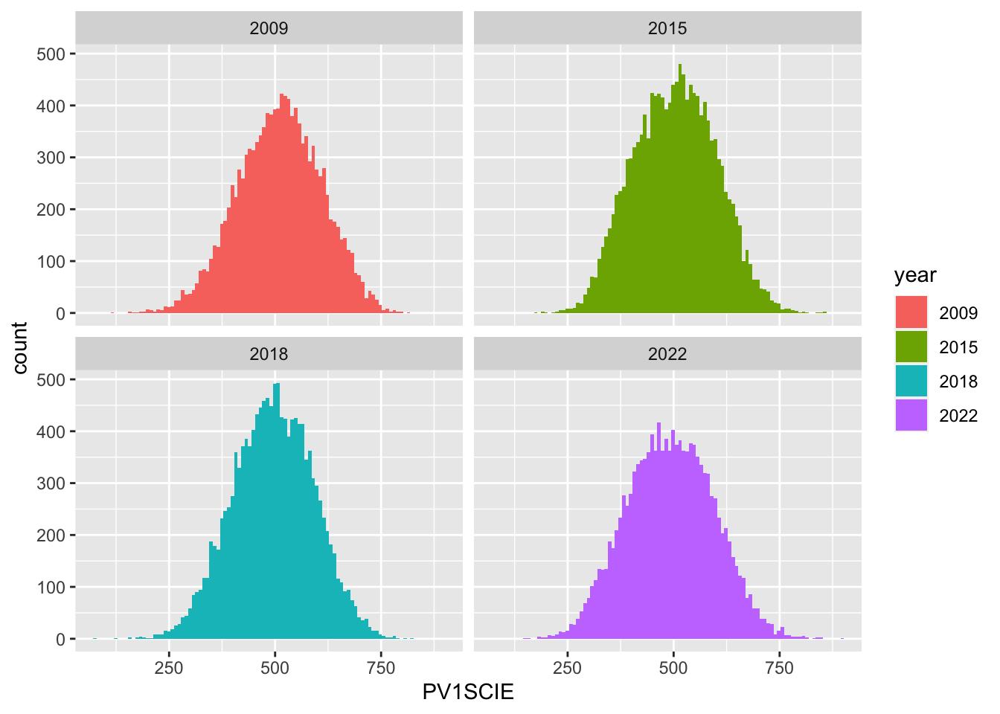

library(arrow)
library(haven)
library(ggplot2)
library(tidyverse)
PISA_2022 <- read_parquet("/Users/k1765032/Library/CloudStorage/GoogleDrive-richardandrewbrock@gmail.com/.shortcut-targets-by-id/1c3CkaEBOICzepArDfjQUP34W2BYhFjM4/PISR/Data/PISA/2022/PISA_student_2022_subset.parquet")
PISA_2018 <- read_parquet("/Users/k1765032/Library/CloudStorage/GoogleDrive-richardandrewbrock@gmail.com/.shortcut-targets-by-id/1c3CkaEBOICzepArDfjQUP34W2BYhFjM4/PISR/Data/PISA/2018/PISA_2018_student.parquet")
PISA_2015 <- read_parquet("/Users/k1765032/Library/CloudStorage/GoogleDrive-richardandrewbrock@gmail.com/.shortcut-targets-by-id/1c3CkaEBOICzepArDfjQUP34W2BYhFjM4/PISR/Data/PISA/2015/PISA_2015_student.parquet")
PISA_2015<-zap_labels(PISA_2015)
PISA_2012 <- read_parquet("/Users/k1765032/Library/CloudStorage/GoogleDrive-richardandrewbrock@gmail.com/.shortcut-targets-by-id/1c3CkaEBOICzepArDfjQUP34W2BYhFjM4/PISR/Data/PISA/2012/pisa_2012_student.parquet")
PISA_2012<-zap_labels(PISA_2012)
PISA_2009 <- read_parquet("/Users/k1765032/Library/CloudStorage/GoogleDrive-richardandrewbrock@gmail.com/.shortcut-targets-by-id/1c3CkaEBOICzepArDfjQUP34W2BYhFjM4/PISR/Data/PISA/2009/pisa_2009_student.parquet")
PISA_2009<-zap_labels(PISA_2009)Trends in PISA science scores
I noticed from the PISA results that the Science scores appear to be decreasing.
I wanted to know whether this trend was statistically significant. So I set about completing some unpaired t-tests and an anova test. This was using PISA data from 2009, 2015, 2018, and 2022.
First, I checked that the data was normally distributed. For all four data sets this was shown to be true.
UKSCI2022 <-PISA_2022 %>%
select(CNT, PV1SCIE) %>%
filter(CNT == "United Kingdom")
ggplot(data = UKSCI2022,
aes(x = PV1SCIE)) +
geom_histogram(binwidth = 5, fill = "darkseagreen4") +
ggtitle("2022")
UKSCI2018 <-PISA_2018 %>%
select(CNT, PV1SCIE) %>%
filter(CNT == "United Kingdom")
ggplot(data = UKSCI2018,
aes(x = PV1SCIE)) +
geom_histogram(binwidth = 5, fill = "red") +
ggtitle("2018")UKSCI2015 <-PISA_2015 %>%
select(CNT, PV1SCIE) %>%
filter(CNT == "GBR")
ggplot(data = UKSCI2015,
aes(x = PV1SCIE)) +
geom_histogram(binwidth = 5, fill = "orange") +
ggtitle("2015")UKSCI2012 <-PISA_2012 %>%
select(CNT, PV1SCIE) %>%
filter(CNT == "GBR")
ggplot(data = UKSCI2012,
aes(x = PV1SCIE)) +
geom_histogram(binwidth = 5, fill = "lightblue") +
ggtitle("2012")UKSCI2009 <-PISA_2009 %>%
select(CNT, PV1SCIE) %>%
filter(CNT == "GBR")
ggplot(data = UKSCI2009,
aes(x = PV1SCIE)) +
geom_histogram(binwidth = 5, fill = "purple") +
ggtitle("2009")qqnorm(UKSCI2022$PV1SCIE)
qqline(UKSCI2022$PV1SCIE, col = "darkgreen") qqnorm(UKSCI2018$PV1SCIE)
qqline(UKSCI2018$PV1SCIE, col = "red") qqnorm(UKSCI2015$PV1SCIE)
qqline(UKSCI2015$PV1SCIE, col = "orange") qqnorm(UKSCI2012$PV1SCIE)
qqline(UKSCI2012$PV1SCIE, col = "lightblue") qqnorm(UKSCI2009$PV1SCIE)
qqline(UKSCI2009$PV1SCIE, col = "purple") I then wanted to complete a t-test comparing the 2022 and 2018 data sets. So firstly checked the variances of the 2 data sets
VarM <- var(UKSCI2022$PV1SCIE, na.rm = TRUE)
VarF <- var(UKSCI2018$PV1SCIE, na.rm = TRUE)
VarM / VarF [1] 1.162336The variance ratio was close to 1 so the two conditions were met and so I could perform the t test.
The Null hypothesis would be that the mean of both 2018 and 2022 would be the same, with the alternative hypothesis being different.
t.test(UKSCI2022$PV1SCIE, UKSCI2018$PV1SCIE,
paired = FALSE, alternative = "two.sided", var.equal = TRUE)
Two Sample t-test
data: UKSCI2022$PV1SCIE and UKSCI2018$PV1SCIE
t = -2.4775, df = 26788, p-value = 0.01324
alternative hypothesis: true difference in means is not equal to 0
95 percent confidence interval:
-5.3386075 -0.6225644
sample estimates:
mean of x mean of y
492.2651 495.2457 P value is 0.01324. This is lower than 0.025 so reject the null hypothesis. Accept the alternative hypothesis that the average PV1SCIE scores for 2018 and 2022 is statistically different.
I went on to compare other years of data with the 2022 data. As can be seen by the p values shown in the results. The alternative hypothesis that the average PV1SCIE scores are statistically different. It is more convincing the further apart the years.
t.test(UKSCI2022$PV1SCIE, UKSCI2018$PV1SCIE, paired = FALSE, alternative = "two.sided", var.equal = TRUE)
Two Sample t-test
data: UKSCI2022$PV1SCIE and UKSCI2018$PV1SCIE
t = -2.4775, df = 26788, p-value = 0.01324
alternative hypothesis: true difference in means is not equal to 0
95 percent confidence interval:
-5.3386075 -0.6225644
sample estimates:
mean of x mean of y
492.2651 495.2457 t.test(UKSCI2022$PV1SCIE, UKSCI2015$PV1SCIE,paired = FALSE, alternative = "two.sided", var.equal = TRUE)
Two Sample t-test
data: UKSCI2022$PV1SCIE and UKSCI2015$PV1SCIE
t = -9.3269, df = 27127, p-value < 2.2e-16
alternative hypothesis: true difference in means is not equal to 0
95 percent confidence interval:
-13.624038 -8.892244
sample estimates:
mean of x mean of y
492.2651 503.5233 t.test(UKSCI2022$PV1SCIE, UKSCI2009$PV1SCIE,paired = FALSE, alternative = "two.sided", var.equal = TRUE)
Two Sample t-test
data: UKSCI2022$PV1SCIE and UKSCI2009$PV1SCIE
t = -14.122, df = 25149, p-value < 2.2e-16
alternative hypothesis: true difference in means is not equal to 0
95 percent confidence interval:
-20.33945 -15.38160
sample estimates:
mean of x mean of y
492.2651 510.1256 Since I had 4 sets of PISA data, and there wanted to perform multiple t-tests for these difference dates. I then completed an anova test.
Anova test
UKSCI2009 <-PISA_2009 %>%
select(CNT, PV1SCIE) %>%
filter(CNT == "GBR")%>%
mutate(year ="2009")
UKSCI2015 <-PISA_2015 %>%
select(CNT, PV1SCIE) %>%
filter(CNT == "GBR") %>%
mutate(year ="2015")
UKSCI2022 <-PISA_2022 %>%
select(CNT, PV1SCIE) %>%
filter(CNT == "United Kingdom")%>%
mutate(year ="2022")
UKSCI2018 <-PISA_2018 %>%
select(CNT, PV1SCIE) %>%
filter(CNT == "United Kingdom")%>%
mutate(year ="2018")
TotalPISA <- rbind(UKSCI2022, UKSCI2018, UKSCI2015, UKSCI2009)
result <- aov(data =TotalPISA, PV1SCIE ~ year)
sumanova <- summary(result)
sumanova Df Sum Sq Mean Sq F value Pr(>F)
year 3 2511892 837297 87.4 <2e-16 ***
Residuals 53122 508920819 9580
---
Signif. codes: 0 '***' 0.001 '**' 0.01 '*' 0.05 '.' 0.1 ' ' 1The Pr(>F) value is <2e-16 which is over 0.05. This therefore suggests that the PV1Sci values are statistically different.
My question is: Why is it that there is a difference in the PV1SCIE scores. Why are they going down? What are the factors that could be causing this?
To further look at the results I ran a Tukey Test following on from the Anova. A Tukey Test can be used to determine which years have significant differences, in this case the mean PV1SCI scores in the UK.
TukeyHSD(result) Tukey multiple comparisons of means
95% family-wise confidence level
Fit: aov(formula = PV1SCIE ~ year, data = TotalPISA)
$year
diff lwr upr p adj
2015-2009 -6.602382 -9.710095 -3.49466982 0.0000003
2018-2009 -14.879938 -18.005230 -11.75464592 0.0000000
2022-2009 -17.860524 -21.033200 -14.68784778 0.0000000
2018-2015 -8.277555 -11.284561 -5.27054992 0.0000000
2022-2015 -11.258141 -14.314365 -8.20191730 0.0000000
2022-2018 -2.980586 -6.054684 0.09351177 0.0613144Interestingly, we cannot say there is a statistical difference between 2022 and 2018, since the p value is larger than 0.05. All other comparisons are statistically difference. Therefore I would agree with OECD (OECD 2023a) that the decline of Science values are not all down to the pandemic. There must be other factors for the decrease in science values. It would be interesting to investigate what is causing this pattern.
References
OECD. 2023a. “Decline in Educational Performance Only Partly Attributable to the COVID-19 Pandemic.” OECD. https://www.oecd.org/newsroom/decline-in-educational-performance-only-partly-attributable-to-the-covid-19-pandemic.htm.
———. 2023b. “PISA 2022 Results (Volume i): The State of Learning and Equity in Education.” OECD. https://doi.org/10.1787/53f23881-en.